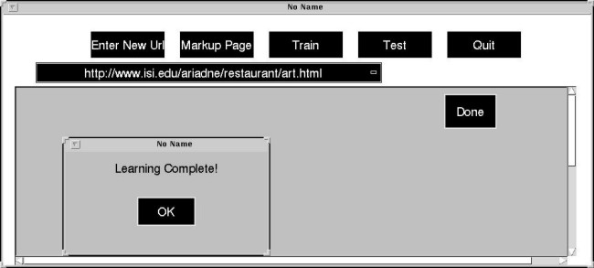
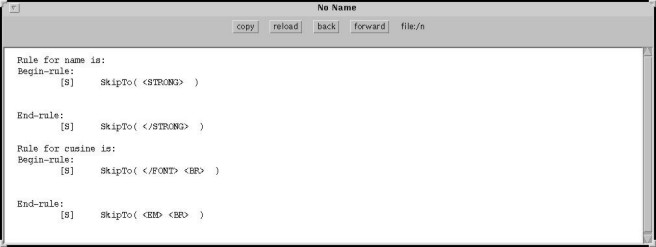

STEP 5:
Finally, after labeling the data of several pages, you press the "Train"
button, which will invoke the STALKER induction algorithm. STALKER
induces the extraction rules and displays them in the browser window.


Last
modified: Wed Jul 22 17:06:13 PDT 1998